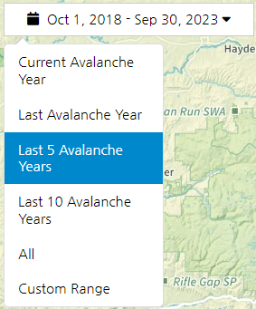

Colorado Accident Explorer Help
Accidents
Avalanche accidents occur when there is human involvement with an avalanche. This can mean someone was caught, buried, or killed. It can also mean there was a human triggered avalanche where no one was caught, buried, or killed. Accident statistics portrayed in this application date back to December 2009. Currently, only fatal accidents where at least one death occurred are depicted in the map. For more information, go to CAIC Statistics & Reporting.
Background
This map is a collaborative effort between the CAIC and Colorado Mountain College. Lucy Kepner, Dara Seidl, and Joe Tayabji created the map using Leaflet, based on data provided from the CAIC. Accidents are shown on a map with three different base layers. The default, Natural Atlas, blends natural and man-made features with contour lines. Roads, trails, and peak names are all labeled. More detail is showed when zoomed in. The Imagery basemap displays satellite imagery from summer. When zoomed in, higher resolution imagery is shown. The Esri Terrain basemap is a simple layer that uses shaded relief so hills and mountains can easily be seen.
Layers
The default layer is the Accidents layer. Accident points are mapped, with D scale being indicated by color and R scale by circle size. The Accidents by Travel Mode layer shows the activity of the user(s) involved in the activity. The CAIC Zones layer shows the areas that forecasting is available for (https://lb.avalanche.state.co.us/forecasts/help/forecast-zones/). The Heatmap layer shows where accidents are focused. This layer adjusts based on how zoomed in the map is.
Map Buttons
By default, the map loads with the previous 5 Water Years of data (one year is October 1 - September 30). This can be adjusted by clicking/tapping the dropdown with the calendar and date range.

 The + and - buttons can be used to control the zoom of the map. The Home button will take you to the default center and zoom of the map.
The + and - buttons can be used to control the zoom of the map. The Home button will take you to the default center and zoom of the map.
Underneath that is the Clear Filters button, which will reset the data selection the the default data range and remove any filters from the graphs. Use this button to bring the original dataset back.
 Below this is the Lasso tool. With this selected, you can click, hold, and move your mouse on the map to select specific accident data.
Below this is the Lasso tool. With this selected, you can click, hold, and move your mouse on the map to select specific accident data.
At the bottom of these buttons is the help button.
Charts
The map includes charts that change based on the data that is selected. The charts can be used to filter the map, as well. Click on any of the bars to only select data in that category. The filters are stackable, i.e. multiple charts can be used to filter.